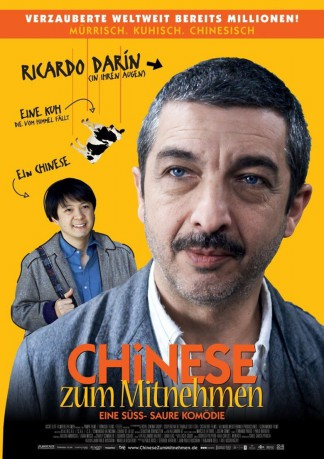

#2019 Chinese zum Mitnehmen
Alternativ: Chinese Take-Out (Englischer Titel)
 
 IMDB-Wertung: 7.3 / 10
IMDB-Wertung: 7.3 / 10  Metascore: 0
Metascore: 0 
Roberto (Ricardo Darin) führt ein Eisenwarengeschäft und ist ähnlich verbohrt wie die Schrauben, die er verkauft. Ein notorischer Einzelgänger, der nichts und vor allem niemanden zu nahe an sich heran lässt. Doch dann platzt Jun (Ignacio Huang) in sein langweiliges Leben und krempelt es komplett um. Denn Jun spricht kein Wort Spanisch, ist gerade erst in Argentinien angekommen und auf die Hilfe anderer angewiesen. Widerwillig nimmt Roberto den Chinesen unter seine Fittiche, um ihm den Start in ein neues Leben zu ebnen. Und findet dabei einen Ausweg aus seinem eigenen,
Jahr: 2011
Dauer: 93 Minuten
FSK: 12
Land: Argentinien Studio: Ascot Elite Entertainment GroupTonspuren:
Untertitel:
Auflösung: 1080p (1920x816) Größe: 3112 MB
Genre: Komödie, Drama
Regisseur: Sebastián Borensztein
Drehbuch: Sebastián Borensztein
Soundtrack: Lucio Godoy
Darsteller:
 Ricardo Darín als Roberto
Ricardo Darín als Roberto- Javier Pinto als Italian Lover
- Muriel Santa Ana als Mari
- Ignacio Huang als Jun
- Enric Cambray als Roberto as a Young Man
- Iván Romanelli als Leonel
- Julia Castelló Agulló als Italian Lover
- Gustavo Comini als Chofer volquete
- Vivian El Jaber als Rosa
- Derli Prada als Proveedor 1
- Pablo Seijo als Cliente 1
Datei: X:\2011(A-F)\Chinese zum Mitnehmen (2011, FSK12, 1920x816).mkv seit 25.09.2015
Festplatte: HD 2010(G-Z)-2011(A-F)
 Es gibt insgesamt 86 Filme in der Gruppe '2011(A-F)'
Es gibt insgesamt 86 Filme in der Gruppe '2011(A-F)'